Tribute to The Overstory
By Richard Powers
 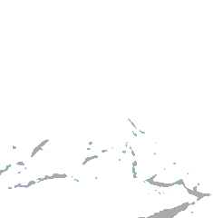
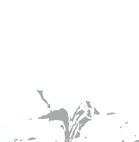
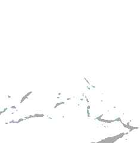
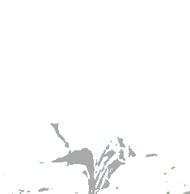


 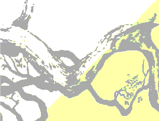
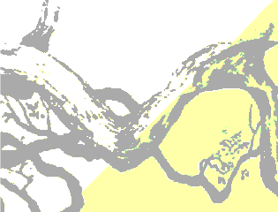
 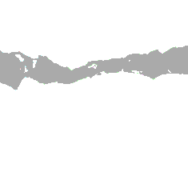
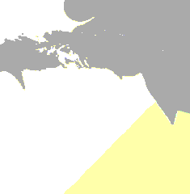
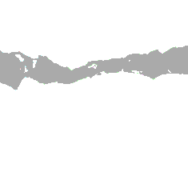
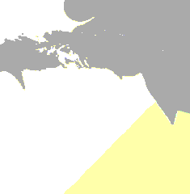

“No one sees trees.
We see fruit,
we see nuts,
we see wood,
we see shade.
We see ornaments or pretty fall foliage.
Obstacles blocking the road or wrecking the ski slope.
Dark, threatening places that must be cleared.
We see branches about to crush our roof.
We see a cash crop.
But trees - TREES ARE INVISIBLE.”
― Richard Powers, The Overstory

 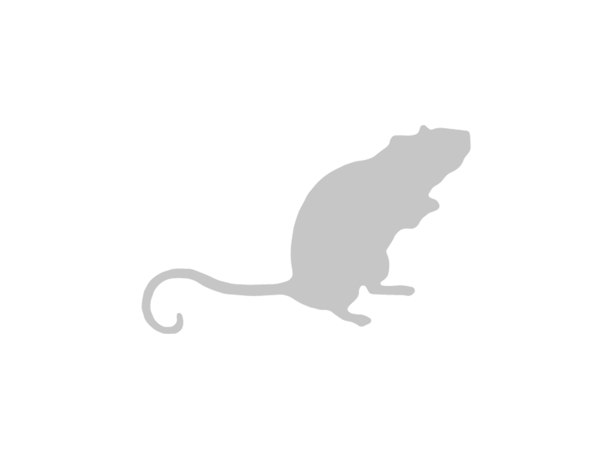
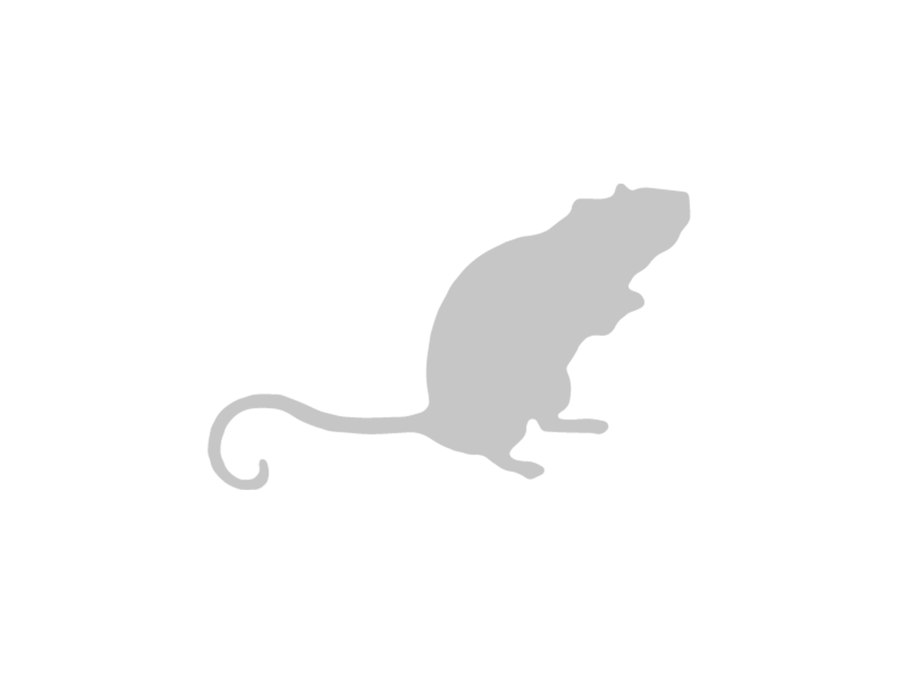